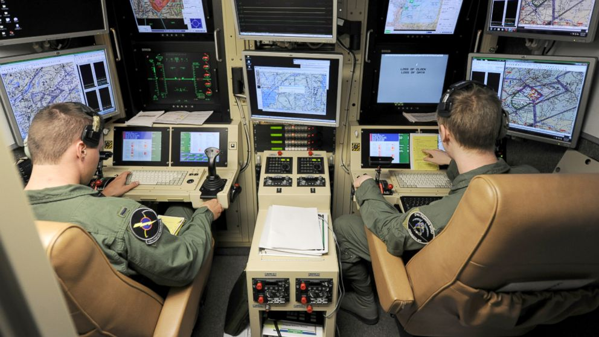
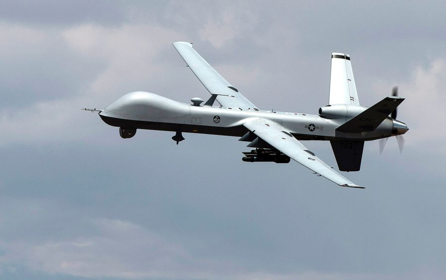
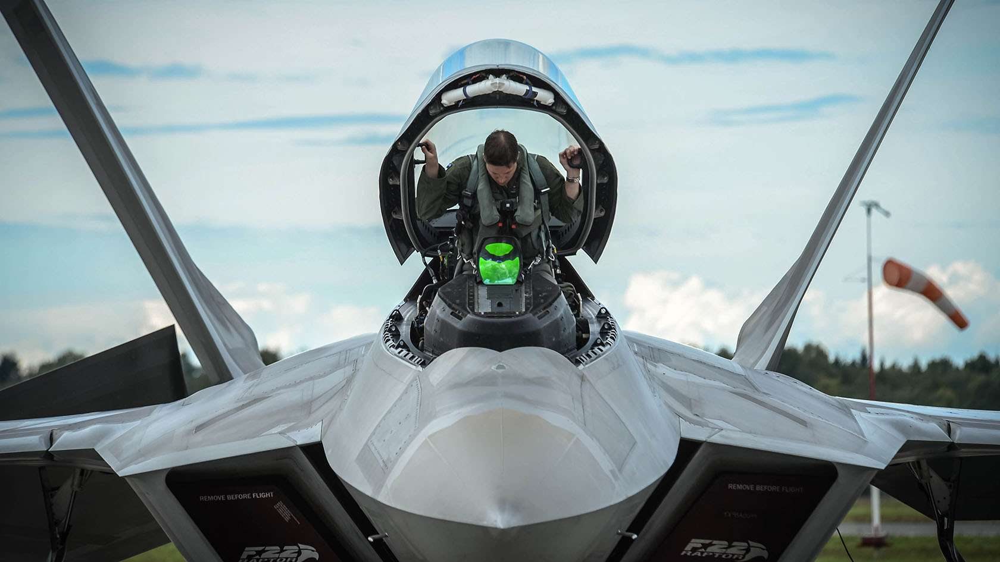
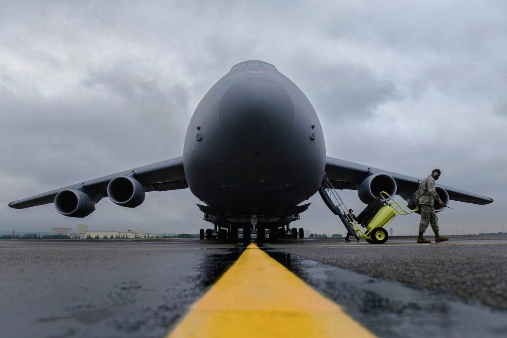
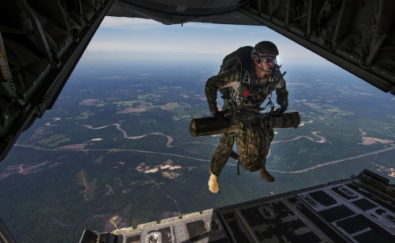

The U.S Air Force offerse many jobs for example:
Drone Pilots


Drone pilots are not in the aircraft. They control the aircraft in base through Computers. They do not rin the risk of losing
their life or worring about not going to be able to go back home becuae they are in base in a safe location from any
danger.
Pilots

Unlike the drone pilots these pilots are in a combat plane that could be taken down and the pilots are risinking their lives
but they are also better for some occasions. Not all pilots fly a combat plane. Some fly cargo planes to transport things to differnt
states and contries.

special warfare

The Airman who make up Air Force Special Warfare are the most
specialized warriors on the planet. They are the ones other special forces look to when the mission calls
for their unique skills and fearless commitment. A job for the mentally though and physical strong, these elite heroes go where others won't because they're trained to do
what others can't.